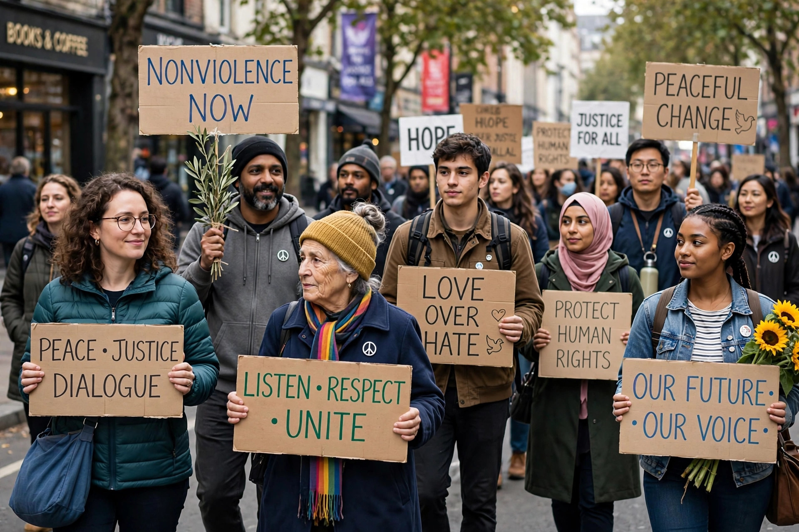

Nonviolent resistance (NVR), or nonviolent action, is the practice of achieving goals such as social or political change through symbolic protests, civil disobedience, economic or political noncooperation and other methods, without using violence.

Gene Sharp catalogued 198 methods of nonviolent action, grouped as protest and persuasion, noncooperation (social, economic boycotts and strikes, political) and nonviolent intervention (sit-ins, occupations, alternative institutions). Civil resistance movements rely on mass participation and inducing loyalty shifts among opponents' supporters.
Ideas trace to Henry David Thoreau, Leo Tolstoy and others. Mahatma Gandhi developed satyagraha in South Africa and India, leading the Salt March (1930) and campaigns culminating in Indian independence. The method powered the U.S. civil rights movement under Martin Luther King Jr., the Philippine People Power Revolution (1986), Eastern Europe's 1989 revolutions, and many pro-democracy movements.
Research by Erica Chenoweth and Maria Stephan found that, between 1900 and 2006, nonviolent campaigns for regime change succeeded about twice as often as violent ones, partly because of far broader participation.